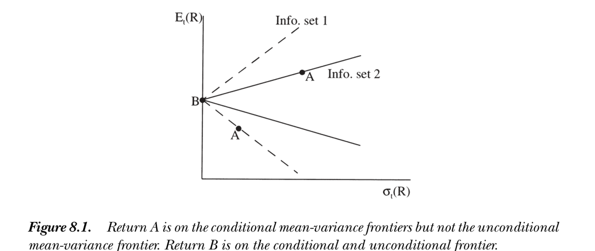

8. Conditioning Information
8. Conditioning Information
本章导读 资产定价本质上用条件矩描述价格：\(p_t=\mathbb E_t(m_{t+1}x_{t+1})\)。若支付与贴现因子是 i.i.d.，条件与非条件就无差别；但股价/股利比、债券与期权价格随时间变化，反映了右侧条件矩在变。本章（Cochrane 第 8 章）不显式建模条件分布，而是问：从条件理论能导出哪些非条件矩含义？§8.1 缩放支付 (scaled payoffs) ——用工具变量 \(z_t\) 乘以支付，把条件含义化为管理组合的非条件含义；§8.2 加缩放收益的充分性；§8.3 条件因子模型不蕴含非条件因子模型（反之成立）、条件 vs 非条件均值方差前沿、Hansen-Richard 批判；§8.4 缩放因子 \(f\otimes z\) 作为部分解决方案。
8. Conditioning Information
Overview Asset pricing really describes prices in terms of conditional moments: \(p_t=\mathbb E_t(m_{t+1}x_{t+1})\). If payoffs and discount factors were i.i.d., conditional and unconditional would coincide; but price/dividend ratios, bond and option prices change over time, reflecting changing conditional moments on the right. This chapter (Cochrane Ch 8) does not model conditional distributions explicitly, but asks: what unconditional implications can we derive from the conditional theory? §8.1 scaled payoffs — multiply payoffs by instruments \(z_t\) to turn conditional implications into unconditional ones for managed portfolios; §8.2 the sufficiency of adding scaled returns; §8.3 a conditional factor model does not imply an unconditional one (the converse does), conditional vs. unconditional mean-variance frontiers, and the Hansen-Richard critique; §8.4 scaled factors \(f\otimes z\) as a partial solution.
为何不直接建模条件分布？因为：让 \(N\) 个收益的条件均值、方差、协方差灵活依赖 \(M\) 个信息变量，所需参数很快超过观测数；更要命的是，这通常要求假设投资者使用与我们相同的条件信息模型。但价格之美正在于它汇总了只有个体才看得见的海量信息（Hayek 1945）——我们既观测不到、也无法纳入主体所用信息的哪怕一小部分。因此，只要可能，我们对条件信息的处理应允许主体看到的比我们多。出路是转向非条件矩（或基于比主体更少信息的矩）。
8.1 缩放支付 / Scaled Payoffs
可以通过添加缩放支付、然后一切都做非条件来纳入条件信息。最简单的非条件含义是"向下取条件 (conditioning down)"：对 \(p_t=\mathbb E_t(m_{t+1}x_{t+1})\) 取非条件期望，
Why not model conditional distributions directly? Because letting the conditional mean, variance, covariance of \(N\) returns depend flexibly on \(M\) information variables quickly needs more parameters than observations; and worse, it typically requires assuming investors use the same model of conditioning information that we do. But the beauty of prices is that they summarize an enormous amount of information only individuals see (Hayek 1945) — we observe, and can include, only a fraction of it. So whenever possible our treatment should let agents see more than we do. The way out is to turn to unconditional moments (or moments conditioned on less than agents see).
8.1 Scaled Payoffs
We can incorporate conditioning information by adding scaled payoffs and doing everything unconditionally. The simplest unconditional implication is "conditioning down": take unconditional expectations of \(p_t=\mathbb E_t(m_{t+1}x_{t+1})\),
$$E(p_t)=E(m_{t+1}x_{t+1}).\tag{8.1}$$
这里用到了迭代期望律：你今天对"明天的最佳预测"的最佳预测，等于你今天的最佳预测——\(E(E_t(x))=E(x)\)，以及更一般的 \(E[E(x|\Omega)\,|\,I\subset\Omega]=E[x|I]\)。它让我们既可向下取到我们观测的较粗信息集，也是后面论证的关键。但我们能做的不止于此。用任意 \(t\) 时可观测的工具变量 (instrument) \(z_t\) 同乘价格与支付：
This uses the law of iterated expectations: your best forecast today of your best forecast tomorrow equals your best forecast today — \(E(E_t(x))=E(x)\), and more generally \(E[E(x|\Omega)\,|\,I\subset\Omega]=E[x|I]\). It lets us condition down to the coarser information sets we observe, and is the key to later arguments. But we can do more. Multiply price and payoff by any instrument \(z_t\) observed at time \(t\):
$$E(p_tz_t)=E(m_{t+1}x_{t+1}z_t).\tag{8.2}$$
这是条件模型的额外含义，单靠向下取条件 (8.1) 捕捉不到。"工具变量"一名源自 GMM 的工具变量传统。关键在于：把 \((x_{t+1}z_t)\) 看成一个支付 \(x=x_{t+1}z_t\)、价格 \(p=E(p_tz_t)\)，则 (8.2) 又写成 \(p=E(mx)\)——所有资产定价理论可直接套用。
This is an additional implication of the conditional model, not captured by conditioning down (8.1). The name "instruments" comes from GMM's instrumental-variables heritage. The key: regard \((x_{t+1}z_t)\) as a payoff \(x=x_{t+1}z_t\) with price \(p=E(p_tz_t)\); then (8.2) reads \(p=E(mx)\) again — and all the asset pricing theory applies directly.
缩放收益 = 管理组合 / Scaled returns = managed portfolios \(z_tx_{t+1}\) 是管理组合 (managed portfolio) 的支付：观测到 \(z_t\) 的投资者不"买入持有"，而是按 \(z_t\) 的取值调整持仓（高 \(z_t\) 预示高收益就多买）；线性规则下每期投入 \(z_tp_t\)、下期收到 \(z_tx_{t+1}\)。规模、贝塔、行业、账面市值比等组合全都是管理组合（其成分每年随信息变动）。于是有一个极简观点：加入管理组合支付，然后就当条件信息不存在、用非条件矩照常做即可。 唯二的微妙处：① 支付集大幅扩张（每个收益可乘每个信息变量）；② 管理组合的期望价格 \(E(p_tz_t)\) 取代了原来 \(p=0\) 或 \(p=1\)。\(z_tx_{t+1}\) are the payoffs of managed portfolios: an investor who sees \(z_t\) does not "buy and hold" but adjusts holdings by \(z_t\) (buy more when a high \(z_t\) forecasts high returns); under a linear rule he puts \(z_tp_t\) in each period and receives \(z_tx_{t+1}\). Size, beta, industry, book/market portfolios are all managed portfolios (their composition changes yearly with information). This gives a beautifully simple recipe: add managed-portfolio payoffs, then proceed with unconditional moments as if conditioning information did not exist. The only subtleties: ① the payoff set expands dramatically (every return times every instrument); ② expected prices \(E(p_tz_t)\) of managed portfolios replace the old \(p=0\) or \(p=1\).
线性的 \(xz\) 并非限制：非线性（可测）变换 \(z_t^2=2+3z_t^2\) 仍是随机变量、仍是合法工具。
8.2 加缩放收益的充分性 / Sufficiency of Adding Scaled Returns
加缩放收益会不会漏掉条件信息的某些含义？原则上不会。依据一个数学事实：\(y_{t+1}\) 对信息集 \(I_t\) 的条件期望，等于用 \(I_t\) 中每个变量（及其每个非线性可测变换）去预测 \(y_{t+1}\) 的回归预测。取 \(y_{t+1}=m_{t+1}x_{t+1}-p_t\)，则"对每个 \(z_t\in I_t\) 有 \(E[(m_{t+1}x_{t+1}-p_t)z_t]=0\)"蕴含 \(0=E(m_{t+1}x_{t+1}-p_t\,|\,I_t)\)。故原则上检验所有管理组合的期望价格，足以检验条件信息的全部含义。
The linearity of \(xz\) is no restriction: a nonlinear (measurable) transform \(z_t^2=2+3z_t^2\) is still a random variable and a valid instrument.
8.2 Sufficiency of Adding Scaled Returns
Does adding scaled returns miss any implications of conditioning information? In principle no. The fact: the conditional expectation \(E(y_{t+1}|I_t)\) equals the regression forecast of \(y_{t+1}\) using every variable \(z_t\in I_t\) (and every nonlinear measurable transform). Taking \(y_{t+1}=m_{t+1}x_{t+1}-p_t\), "\(E[(m_{t+1}x_{t+1}-p_t)z_t]=0\) for every \(z_t\in I_t\)" implies \(0=E(m_{t+1}x_{t+1}-p_t\,|\,I_t)\). So checking the expected prices of all managed portfolios is, in principle, sufficient to check all the implications of conditioning information.
实务上工具数量有限：只有能预测收益或 \(m\)（及其高阶矩）的变量才添信息。选几个工具 = 选几个资产/组合——这与任何资产定价检验中"挑选组合、舍弃许多可能资产"完全同构。多数研究不过检验模型能否给 10–25 个股票组合与几个债券组合定价，隐含地相信这些支付较好张成了风险载荷或均值收益。排除潜在工具与排除资产毫无二致，根基同样薄弱；只是后者乃常见之过，人们便少了顾虑。非缩放收益并无特殊地位：一只跟随该管理策略的共同基金，其非缩放收益就等于一个缩放收益。
8.3 条件与非条件模型 / Conditional and Unconditional Models
In practice the number of instruments is limited: only variables that forecast returns or \(m\) (or their higher moments) add information. Choosing a few instruments = choosing a few assets/portfolios — exactly the choice one makes in any asset pricing test by forming portfolios and omitting many assets. Most studies merely check whether a model prices 10–25 stock and a few bond portfolios, implicitly trusting these span the available risk loadings or mean returns. Excluding instruments is exactly excluding assets — no better founded, but a common sin one worries less about. Unscaled returns are not special: a mutual fund following the managed strategy would have unscaled returns equal to a scaled return.
8.3 Conditional and Unconditional Models
核心不对称 / The central asymmetry 条件因子模型不蕴含非条件因子模型；但（在含管理组合时）非条件蕴含条件。 具体：① \(m_{t+1}=b_t'f_{t+1}\) 条件定价，不蕴含存在常数 \(b\) 使 \(m_{t+1}=b'f_{t+1}\) 非条件定价；② \(\mathbb E_t(R_{t+1})=\beta_t'\lambda_t\) 不蕴含 \(E(R_{t+1})=\beta'\lambda\)；③ 条件均值方差有效不蕴含非条件均值方差有效。A conditional factor model does not imply an unconditional one; but (with managed portfolios) the unconditional implies the conditional. Specifically: ① \(m_{t+1}=b_t'f_{t+1}\) pricing conditionally does not imply a constant \(b\) with \(m_{t+1}=b'f_{t+1}\) pricing unconditionally; ② \(\mathbb E_t(R_{t+1})=\beta_t'\lambda_t\) does not imply \(E(R_{t+1})=\beta'\lambda\); ③ conditional mean-variance efficiency does not imply unconditional mean-variance efficiency.
对显式贴现因子模型（参数不随时间变），条件/非条件之别无关紧要：\(p_t=\mathbb E_t(m_{t+1}x_{t+1})\Rightarrow E(p_t)=E(m_{t+1}x_{t+1})\)，仅此而已（如幂效用 \(m=\beta(c_{t+1}/c_t)^{-\gamma}\)、对数效用 CAPM \(m=1/R^W\)）。但线性因子模型的参数可能随条件信息变。以 CAPM \(m=a-bR^W\) 为例，强制它给 \(R^W\) 与无风险利率定价，解得
For explicit discount factor models (parameters constant over time), the conditional/unconditional distinction is immaterial: \(p_t=\mathbb E_t(m_{t+1}x_{t+1})\Rightarrow E(p_t)=E(m_{t+1}x_{t+1})\), and that's it (e.g. power utility \(m=\beta(c_{t+1}/c_t)^{-\gamma}\), log-utility CAPM \(m=1/R^W\)). But linear factor models have parameters that may vary with conditioning information. For the CAPM \(m=a-bR^W\), forcing it to price \(R^W\) and a risk-free rate gives
$$a_t=\frac{1}{R^f_t}+b_t\,\mathbb E_t(R^W_{t+1}),\qquad b_t=\frac{\mathbb E_t(R^W_{t+1})-R^f_t}{R^f_t\,\sigma^2_t(R^W_{t+1})}.\tag{8.3}$$
(8.3) 显示 \(a_t,b_t\) 必随 \(\mathbb E_t(R^W),\sigma^2_t(R^W),R^f_t\) 变动——故条件 CAPM 必是时变权重的线性因子模型 \(m_{t+1}=a_t-b_tR^W_{t+1}\)。这就不能透明地向下取条件：取非条件期望会冒出 \(\operatorname{cov}(a_t,R_{t+1})\)、\(\operatorname{cov}(b_t,R^W_{t+1}R_{t+1})\) 等协方差项，一般不为零。在贝塔语言里同理：\(\mathbb E_t(R^i_{t+1})=R^f_t+\beta^i_t\lambda_t\) 不蕴含 \(E(R^i_{t+1})=\gamma+\beta^i\lambda\)（向下取条件留下 \(\beta^i_t\) 与 \(\lambda_t\) 的协方差）。
特例（能向下取条件）。 风险溢价 \(\lambda_t=\operatorname{var}_t(f)b_t\)，故：① \(b_t=b\) 常数 ⟺ 市场风险价格与条件方差同比例变动；② 收益与因子的条件协方差恒定（即便 \(b_t\) 变）；③ 条件贝塔恒定——三者各自充分。
(8.3) shows \(a_t,b_t\) must vary as \(\mathbb E_t(R^W),\sigma^2_t(R^W),R^f_t\) vary — so the conditional CAPM must be a time-varying-weight linear factor model \(m_{t+1}=a_t-b_tR^W_{t+1}\). This means we cannot transparently condition down: taking unconditional expectations throws up covariance terms \(\operatorname{cov}(a_t,R_{t+1})\), \(\operatorname{cov}(b_t,R^W_{t+1}R_{t+1})\), generally nonzero. In beta language likewise: \(\mathbb E_t(R^i_{t+1})=R^f_t+\beta^i_t\lambda_t\) does not imply \(E(R^i_{t+1})=\gamma+\beta^i\lambda\) (conditioning down leaves a covariance of \(\beta^i_t\) and \(\lambda_t\)).
Special cases (that do condition down). Since \(\lambda_t=\operatorname{var}_t(f)b_t\): ① \(b_t=b\) constant ⟺ market prices of risk move proportionally to conditional variance; ② constant conditional covariance of returns with factors (even if \(b_t\) varies); ③ constant conditional betas — each is sufficient.
精确陈述。 设 \(X\) 为所有原始资产组合的空间（含权重依赖条件信息的管理组合，即缩放收益）。条件因子定价模型 \(m_{t+1}=a_t+b_t'f_{t+1}\) 对所有 \(x\in X\) 满足 \(p_t=\mathbb E_t(m_{t+1}x)\)；非条件（更宜称"固定权重"）因子模型 \(m_{t+1}=a+b'f_{t+1}\) 对所有 \(x\in X\) 满足 \(E(p_t)=E(m_{t+1}x)\)。于是非条件只是条件的一个特例（恰好权重固定）：故条件不蕴含非条件，非条件蕴含条件。微妙处：两者共享含全部管理组合的支付空间 \(X\)——若静态 CAPM 不能给被工具缩放的资产定价，它就根本不是合法的因子定价模型。
均值方差前沿。 定义条件前沿为给定 \(\mathbb E_t(R)\) 最小化 \(\operatorname{var}_t(R)\) 的收益集；非条件前沿为给定 \(E(R)\)、含管理组合、最小化 \(\operatorname{var}(R)\) 的收益集。则：
A precise statement. Let \(X\) be the space of all portfolios of primitive assets (including managed portfolios whose weights depend on conditioning information — scaled returns). A conditional factor pricing model \(m_{t+1}=a_t+b_t'f_{t+1}\) satisfies \(p_t=\mathbb E_t(m_{t+1}x)\) for all \(x\in X\); an unconditional (better, "fixed-weight") model \(m_{t+1}=a+b'f_{t+1}\) satisfies \(E(p_t)=E(m_{t+1}x)\) for all \(x\in X\). So the unconditional is just a special case of the conditional (fixed weights): hence conditional does not imply unconditional, but unconditional implies conditional. The subtlety: both share the payoff space \(X\) containing all managed portfolios — if the static CAPM cannot price assets scaled by instruments, it is not a valid factor pricing model at all.
Mean-variance frontiers. Define the conditional frontier as the returns minimizing \(\operatorname{var}_t(R)\) given \(\mathbb E_t(R)\); the unconditional frontier as the returns (including managed portfolios) minimizing \(\operatorname{var}(R)\) given \(E(R)\). Then:
与字面直觉相反 / Exactly opposite to what the words suggest 非条件前沿上的收益必在条件前沿上；但条件前沿上的收益未必在非条件前沿上。 迭代期望律让你以为"条件 ⟹ 非条件"，但研究的是前沿而非原始期望，结论恰好相反。用正交分解看最透：\(R^{mv}=R^*+wR^{e*}\)，\(w\) 为 \(t\) 时随机变量则条件有效，\(w\) 为常数则非条件有效；常数属于 \(t\) 信息集、但 \(t\) 时随机变量未必是常数——故非条件有效 ⟹ 条件有效，反之不然。（关键：同一组 \(x^*,R^*,R^{e*}\) 由迭代期望律同时代表条件与非条件价格/均值。）A return on the unconditional frontier is on the conditional frontier; but a return on the conditional frontier need not be on the unconditional one. Iterated expectations makes you expect "conditional ⟹ unconditional," but we study frontiers, not raw expectations, and the opposite words apply. The orthogonal decomposition shows it cleanly: \(R^{mv}=R^*+wR^{e*}\) is conditionally efficient if \(w\) is any time-\(t\) random variable, unconditionally efficient if \(w\) is a constant; constants are in the \(t\) information set, but time-\(t\) random variables need not be constant — so unconditional efficiency ⟹ conditional, not vice versa. (Crucially, by iterated expectations the same \(x^*,R^*,R^{e*}\) represent both conditional and unconditional prices/means.)

图 8.1 收益 A 在各期条件均值方差前沿上，但不在非条件前沿上；收益 B 在条件与非条件前沿上（B 非条件方差为零）。两条虚线为两个不同信息集下的条件前沿。
Figure 8.1 Return A is on the conditional mean-variance frontiers but not the unconditional frontier; return B is on both (B has zero unconditional variance). The two dashed lines are conditional frontiers under two different information sets.
注意"非条件前沿"含管理组合收益。许多人所谓"非条件前沿"其实是固定权重组合的前沿——它落在另两条前沿之内，可能相切但未必，与那两条并无关联。例如，无风险利率仅当其为常数时才在非条件前沿上（\(R^f=R^*+R^fR^{e*}\)，需 \(w=R^f\) 为常数），但它总是在条件前沿上。
Note the "unconditional frontier" includes managed-portfolio returns. What many call the "unconditional frontier" is actually the fixed-weight frontier — it lies inside the other two, may touch but need not, and has no connection to them. For example, the risk-free rate is on the unconditional frontier only if it is a constant (\(R^f=R^*+R^fR^{e*}\) needs \(w=R^f\) constant), but it is always on the conditional frontier.
Hansen-Richard 批判 / The Hansen-Richard critique 许多模型（如 CAPM）只蕴含对投资者信息集的条件线性因子模型 \(m_{t+1}=a_t+b_t'f_{t+1}\)。但我们只能用可观测、可纳入的变量向下取条件来检验。由于无法观测主体的信息集、且不能在检验条件模型时把它略去——条件线性因子模型是不可检验的！ 类比 Roll 批判（财富组合不可观测使 CAPM 检验不可能），Hansen-Richard 指出：即便财富组合可观测，主体信息集不可观测也注定了 CAPM 检验的失败。CAPM 完全可能（条件上）为真却通不过非条件检验。Many models (e.g. the CAPM) imply only a conditional linear factor model \(m_{t+1}=a_t+b_t'f_{t+1}\) with respect to investors' information. But we can only test by conditioning down on variables we observe and include. Since we cannot observe agents' information sets and cannot omit them in testing a conditional model — a conditional linear factor model is not testable! By analogy to the Roll critique (the unobservable wealth portfolio makes CAPM tests impossible), Hansen-Richard point out: even if the wealth portfolio were observable, the unobservability of agents' information sets dooms tests of the CAPM. The CAPM may well be true (conditionally) yet fail unconditional tests.
8.4 缩放因子：部分解决方案 / Scaled Factors: A Partial Solution
既然条件模型不可检验，能否退一步？部分解决方案：把参数 \(a_t,b_t\) 建模为 \(t\) 时变量 \(z_t\) 的函数，尤其试线性形式 \(a_t=a'z_t\)、\(b_t=b'z_t\)（线性不算限制，\(z_t^2\) 只是另一工具）。这导出"缩放因子"的漂亮解读：以单因子单工具为例，
8.4 Scaled Factors: A Partial Solution
Since the conditional model is not testable, can we step back? A partial solution: model the parameters \(a_t,b_t\) as functions of time-\(t\) variables \(z_t\), in particular linear forms \(a_t=a'z_t\), \(b_t=b'z_t\) (linearity is no restriction, \(z_t^2\) is just another instrument). This yields a beautiful "scaled factors" reading; with a single factor and instrument,
$$m_{t+1}=a_0+a_1z_t+b_0f_{t+1}+b_1(z_tf_{t+1}).\tag{8.7}$$
于是时变系数的单因子模型变成固定系数的三因子模型（因子为 \(z_t,f_{t+1},z_tf_{t+1}\)），可直接用非条件矩。例如标准 CAPM 中市场收益条件有效、\(m_{t+1}=a_t-b_tR^W_{t+1}\)；若股利价格比与期限溢价较好概括了条件矩的变动，则条件 CAPM 蕴含一个非条件五因子（含常数）模型：常数、市场收益、股利价格比、期限溢价、以及市场收益乘这两个工具（Jagannathan and Wang 1996 检验类似因子能否解释 CAPM 异象）。多因子多工具时，原则上每个因子乘每个工具，用 Kronecker 积紧凑写成
So a single-factor model with time-varying coefficients becomes a three-factor model with fixed coefficients (factors \(z_t,f_{t+1},z_tf_{t+1}\)), usable with unconditional moments. E.g. in the standard CAPM the market is conditionally efficient, \(m_{t+1}=a_t-b_tR^W_{t+1}\); if the dividend/price ratio and term premium summarize the variation in conditional moments well, the conditional CAPM implies an unconditional five-factor (plus constant) model: a constant, the market return, the dividend/price ratio, the term premium, and the market return times those two instruments (Jagannathan and Wang 1996 test whether such factors explain CAPM anomalies). With many factors and instruments, multiply every factor by every instrument, written compactly with the Kronecker product
$$m_{t+1}=b'(f_{t+1}\otimes z_t).$$
小结 / Summary
条件信息初看吓人，本章却给出极简优美的处理：要表达一个模型的条件含义，只需加入若干精选的缩放/管理组合收益，然后就当从没听说过条件信息。某些因子模型是关于投资者信息集的条件模型，一般不可检验；但若愿意假设相关条件信息能由少数变量概括，就把旧因子乘以这些条件变量得到新因子，再次忘掉条件信息即可。条件信息可留作诊断或经济解释（画条件 \(b\)、贝塔、风险溢价的图），但在估计与检验中不必为它过分操心。核心不对称——非条件 ⟹ 条件而非反之——与 Hansen-Richard 批判，是本章最该记住的两点。
Summary
Conditioning information sounds scary at first, but this chapter gives a simple, beautiful treatment: to express a model's conditional implications, just add a few well-chosen scaled/managed-portfolio returns, then pretend you never heard of conditioning information. Some factor models are conditional with respect to investors' information and generally untestable; but if you assume the relevant conditioning information is summarized by a few variables, multiply the old factors by those variables to get new factors and again forget conditioning information. Keep it as a diagnostic or for economic interpretation (plot conditional \(b\)'s, betas, risk premia), but don't worry much about it in estimation and testing. The central asymmetry — unconditional ⟹ conditional, not vice versa — and the Hansen-Richard critique are the two things to remember.
习题 / Problems
- 若存在无风险资产，它在 (a) 条件前沿、(b) 非条件前沿、还是 (c) 两者上？
- 若存在条件无风险资产（每期都交易一份对 1 的索取权），是否意味着存在非条件无风险资产？（先定义后者！）反之如何？
- 取资产收益的非条件总体矩 \(E(R),E(RR')\) 构造前沿，它对应条件前沿、非条件前沿，还是都不是？
- (a) 证明 \(\sigma^2(x_{t+1})=E[\sigma^2_t(x_{t+1})]+\sigma^2[\mathbb E_t(x_{t+1})]\)。方差何时能向下取条件（非条件方差等于平均条件方差）？(b) 给出协方差的类似分解。
- 用 \(E(R)\)-\(\beta\) 与 \(m=a+bf\) 两种表示，证明下列三条件各自足以让模型向下取条件（只考虑超额收益 \(0=\mathbb E_t(mR^e)\)，归一化 \(m=1+b'f\)、\(\mathbb E_t(f)=0\)）：(a) \(b_t=b\) 常数 ⟺ \(\lambda_t=-\operatorname{var}_t(ff')b\)；(b) \(\operatorname{cov}_t(R^e,f')\) 恒定（即便 \(b_t\) 变）；(c) 条件贝塔恒定。
Problems
- If there is a risk-free asset, is it on the (a) conditional, (b) unconditional frontier, or (c) both?
- If there is a conditionally risk-free asset (a claim to 1 traded each date), does that mean there is an unconditionally risk-free asset? (Define the latter first!) And vice versa?
- If you take the unconditional population moments \(E(R),E(RR')\) and build a frontier, does it correspond to the conditional frontier, the unconditional frontier, or neither?
- (a) Show \(\sigma^2(x_{t+1})=E[\sigma^2_t(x_{t+1})]+\sigma^2[\mathbb E_t(x_{t+1})]\). When do variances condition down (unconditional variance equals average conditional variance)? (b) Find the analogous decomposition for covariances.
- Using the \(E(R)\)-\(\beta\) and \(m=a+bf\) representations, show each of the following is sufficient for a model to condition down (consider only excess returns \(0=\mathbb E_t(mR^e)\), normalize \(m=1+b'f\), \(\mathbb E_t(f)=0\)): (a) \(b_t=b\) constant ⟺ \(\lambda_t=-\operatorname{var}_t(ff')b\); (b) \(\operatorname{cov}_t(R^e,f')\) constant (even if \(b_t\) varies); (c) constant conditional betas.